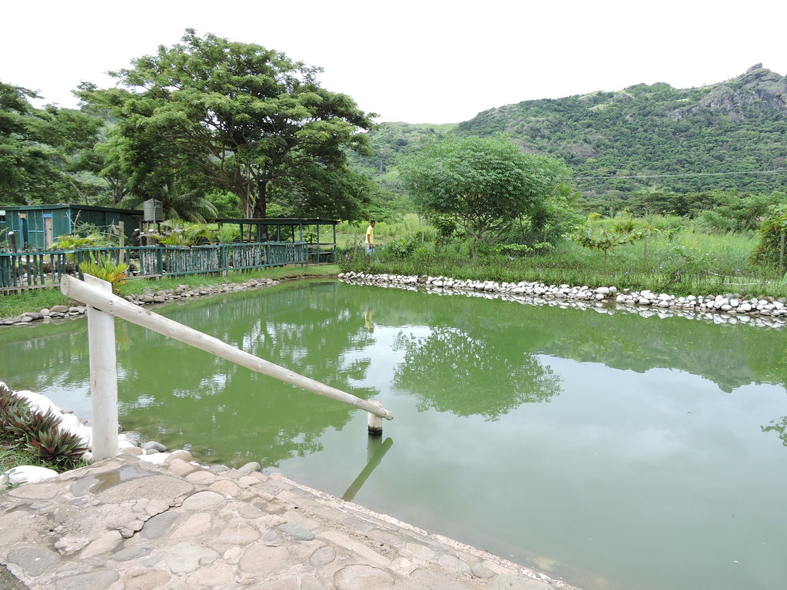

Sabeto Hot Springs: Relax and Unwind
The Sabeto area near Nadi is known for its natural hot springs and mud pools. Visitors can enjoy warm bathing pools and take a break from sightseeing. This destination is a good addition to a Fiji holiday because it offers a different experience from the beaches and resort swimming pools.

Tips for Visitors
- Check the attraction's opening times before arriving.
- Bring a towel and suitable clothing.
- Follow instructions about pool temperatures and safe bathing.
- Allow time to enjoy the natural surroundings.